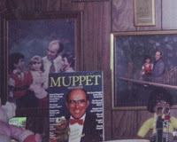

Muppets cover
6/22/2009
{kind=link}

Question: Dear Clinton, You were in Muppet Magazine? (I saw a picture with you on the cover of Muppet Magazine) Did you meet Jim Henson? If so what was he like in person? I was first introduced to puppets via the Muppets. Philip* * * * * *
Answer: Philip: I've been in a number of magazines, even featured on the cover of a couple, but I have to be honest, the Muppet magazine cover was a gag photo taken at Disney world. I am a huge fan of the Muppets, so having the opportunity to have a fun photo taken was just too much to pass up. I would have loved to have met Jim Henson and had the opportunity to chat with him. Unfortunately I never was so fortunate. Jim Henson was very instrumental in making puppetry an adult entertainment medium. And he also opened many ventriloquist's eyes to the possibility of using soft puppets as figures for professional use. As entertainers in the field of ventriloquist puppetry, we owe Henson a great deal of thanks. Clinton